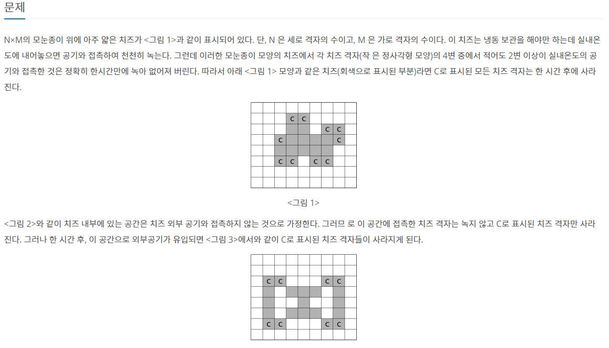
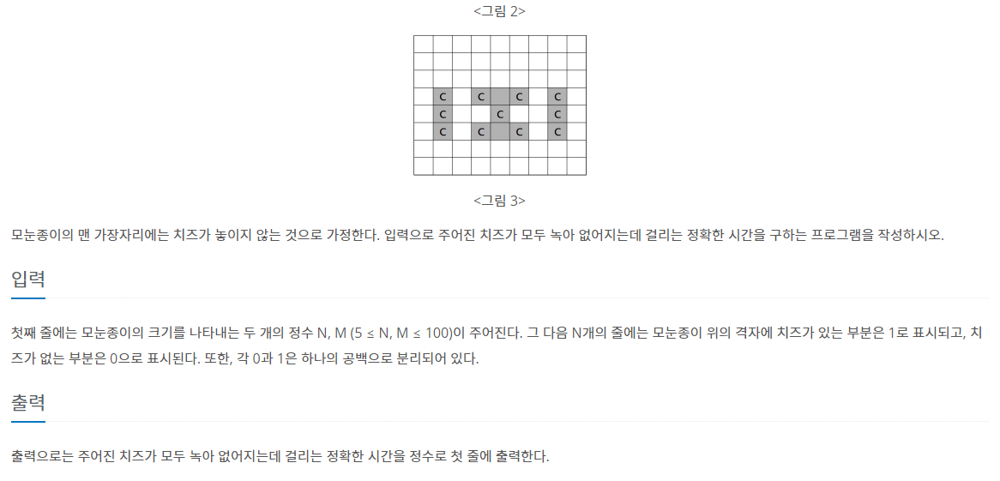
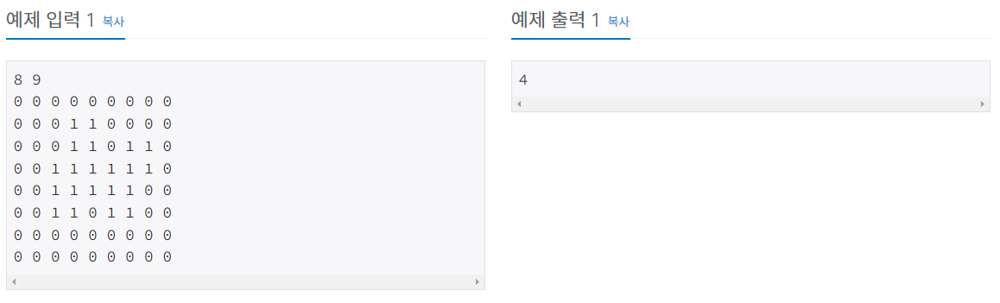
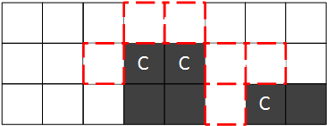
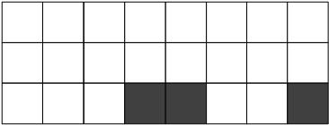

#INFO
난이도 : GOLD4
문제유형 : BFS
2638번: 치즈
첫째 줄에는 모눈종이의 크기를 나타내는 두 개의 정수 N, M (5 ≤ N, M ≤ 100)이 주어진다. 그 다음 N개의 줄에는 모눈종이 위의 격자에 치즈가 있는 부분은 1로 표시되고, 치즈가 없는 부분은 0으로
www.acmicpc.net
  
#SOLVE
치즈배열 전체를 BFS 알고리즘을 이용해 여러번 탐색하며 외부 공기와 2면 이상 접촉하는 치즈를 삭제해 주는 방식으로 풀이하였다.
예를들어 다음과 같은 케이스에서 치즈 블록과 외부 공기 블록이 2면 이상 겹치기에 C블록을 삭제해준다.
// 외부 공기와 2면 이상 접촉 시 삭제
for(int i = 0; i < n; i++){
for(int j = 0; j < m; j++){
if(counts[i][j] >= 2) cheese[i][j] = 0;
}
}
hour++; 
BFS탐색을 한 번 끝마치면 h변수(시간 정보)를 1 증가시켜준다. 다음으로 isEmpty()함수를 이용해 치즈 배열에 치즈가 남아있는지 확인한다. 만약 치즈가 남아있다면 다시 한 번 BFS탐색을 진행하고, 치즈가 남아있지 않다면 반복문을 빠져나온다.
bool isEmpty(){
bool flag = true;
for(int i = 0; i < n; i++){
for(int j = 0; j < m; j++){
if(cheese[i][j] == 1) flag = false;
}
}
if(flag) {
return true;
}
else {
return false;
}
}#CODE
#include <bits/stdc++.h>
using namespace std;
#define X first
#define Y second
int counts[101][101] = {0, };
int isVisit[101][101] = {0, };
int cheese[101][101] = {0, };
int dx[4] = {-1, 0, 1, 0};
int dy[4] = {0, 1, 0, -1};
int n, m;
int hour;
bool isEmpty(){
bool flag = true;
for(int i = 0; i < n; i++){
for(int j = 0; j < m; j++){
if(cheese[i][j] == 1) flag = false;
}
}
if(flag) {
return true;
}
else {
return false;
}
}
int main(void) {
ios::sync_with_stdio(0);
cin.tie(0); cout.tie(0);
// input cheese info
cin >> n >> m;
for(int i = 0; i < n; i++)
for(int j = 0; j < m; j++)
cin >> cheese[i][j];
// bfs
while(true){
fill(&isVisit[0][0], &isVisit[n][m] , 0);
fill(&counts[0][0], &counts[n][m], 0);
if(isEmpty()) break;
queue<pair<int,int>> Q;
Q.push({0, 0});
isVisit[0][0] = 1;
while(!Q.empty()){
auto cur = Q.front(); Q.pop();
for(int dir = 0; dir < 4; dir++){
int nx = cur.X + dx[dir];
int ny = cur.Y + dy[dir];
if(nx < 0 || nx >= n || ny < 0 || ny >= m) continue;
if(isVisit[nx][ny]) continue;
if(cheese[nx][ny] == 1) {
counts[nx][ny]++;
continue;
}
Q.push({nx, ny});
isVisit[nx][ny] = 1;
}
}
// 외부 공기와 2면 이상 접촉 시 삭제
for(int i = 0; i < n; i++){
for(int j = 0; j < m; j++){
if(counts[i][j] >= 2) cheese[i][j] = 0;
}
}
hour++;
}
cout << hour << '\n';
return 0;
}